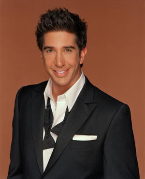
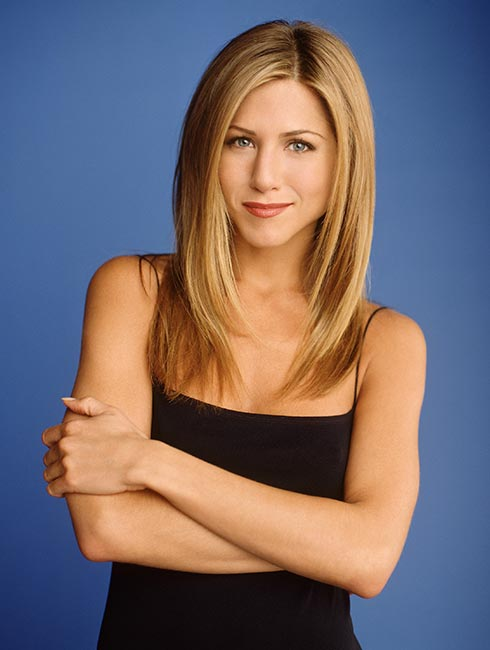
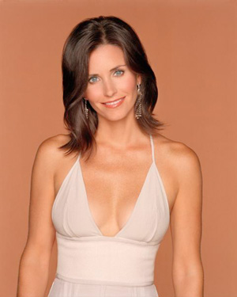
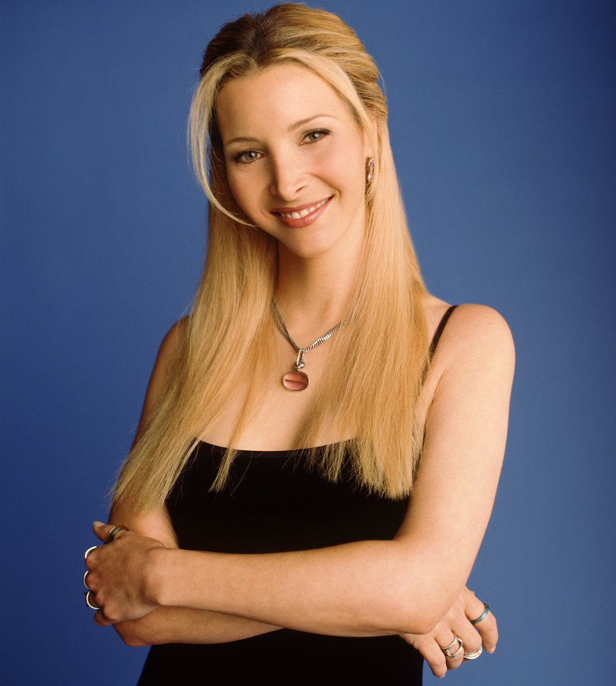
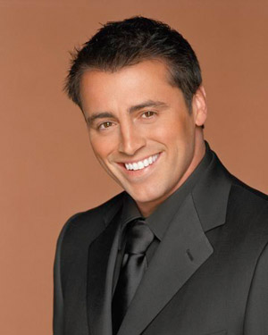

Ross and I met in college at NYU. We were randomly paired as roommates and soon became best friends. After college we both moved to the same neighborhood and remained as close as ever. Considering I married his sister, I guess you could say we're still pretty close. Ross currently lives in Manhattan with his wife Rachel, his son, Ben, and his daughter, Emma. After working many years as a professor, Ross is now the head of the Paleontology department at NYU.
I met Rachel at Thanksgiving dinner at My future in-law's house while we were in college, she being Monica's guest and I being Ross's. We were reunited when she suddenly walked into our lives after walking out on her wedding in the early 90's. From there she became, Monica's roommate, my neighbor, and Ross's girlfriend. Now, all these years later, she lives in Manhattan with her husband, Ross, her step-son Ben, and her daughter Emma. She has been head executive at Louis Vuitton's New York branch for years.
Monica and I were friends for years before we ever started dating. She was always my "best friend's little sister" until we became neighbors and she and I formed a friendship of our own. From our great friendship grew our fantastic relationship, (after we hid it from our friends for almost a year). Monica runs her own successful catering business from our home. She obviously resides in Westchester County with Jack, Erica, and I in the home we've owned for the past 14 years.
Phoebe and I met when she lived with Monica, therefore being my neighbor. She's always been the most "free-spirited" of all of us, and she does keep things interesting. Over the years she and I have gotten into a lot of crazy adventures together. Even though we're adults and parents now, it still happens frequently. She is currently a Masseuse and freelance Musician all over the city. Phoebe and her Husband Mike still live in Greenwich Village (where we all lived in our younger years) with her two daughters Regina and Valerie.
Joey and I met when he answered a "roommate wanted" ad that I put out. From the day he moved in we hit it off and became best friends. We lived together for eight years, but even after I moved out I only lived across the hall, so it was as if I never left. Joey moved out of his bachelor pad after he got married. He moved to Manhattan and lives with his wife Camille and new baby daughter, Daisy. Joey is successful a Soap Opera star playing Dr. Drake Ramoray on Days of Our Lives.